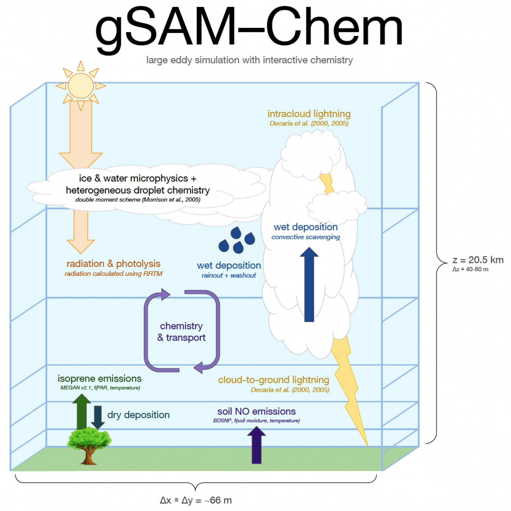

gSAM–Chem
large eddy simulation with interactive chemistry
A fast and modular platform to investigate atmospheric chemistry and transport at convective scales, resolving plume-scale chemistry.
large eddy simulation with interactive chemistry
A fast and modular platform to investigate atmospheric chemistry and transport at convective scales, resolving plume-scale chemistry.
Built on global System for Atmospheric Modeling (gSAM), gSAM–Chem adds a fully coupled chemistry module without sacrificing performance.
Resolves convective updrafts, cloud microphysics, and lightning at ~66 m horizontal resolution. Captures plume-scale isoprene–NOx segregation that is parametrized away in coarser models.
Surface isoprene and soil NOx emissions respond to light, temperature, and precipitation-driven soil moisture. Lightning NOx is generated in real time from simulated convective intensity and cloud-to-ground/intracloud flash rates.
Plug-and-play gas-phase mechanisms via KPP. Ships with the CloudChem mechanism (44 gas-phase + 7 photolysis reactions) tuned for tropical isoprene–NOx–OH chemistry. Swap in any mechanism for other applications.
gSAM–Chem couples a large eddy simulation dynamical core with interactive gas-phase chemistry, emissions, and deposition.

Traditional chemical transport models parametrize convection whereas gSAM–Chem explicitly simulates it, enabling mechanistic studies of chemistry-meteorology interactions.
gSAM–Chem was developed with tropical deep convection in mind, but its modular design supports a range of applications.
Simulate isoprene, NOx, OH, and related species in convective environments. Constrain with observational data such as GoAmazon, ATTO, ARM, or other campaign data.
Quantify chemistry–turbulence segregation, canopy-layer chemistry, or lightning NOx production at resolutions inaccessible to global and regional models.
Generate high-resolution vertical profiles to interpret satellite trace gas retrievals from CrIS, OMI, TROPOMI, TEMPO, STRIVE, etc.